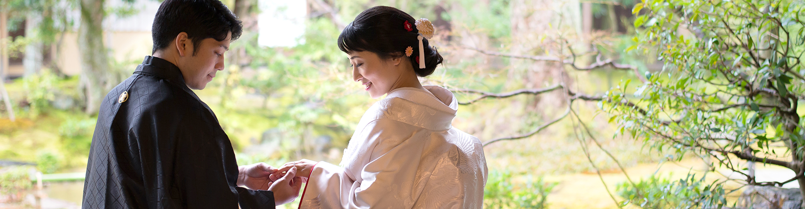
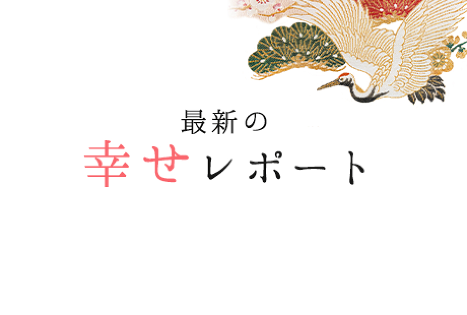
華結びをご利用いただいた、
幸せなカップルさんをご紹介させていただきます。
梅宮大社で前撮り
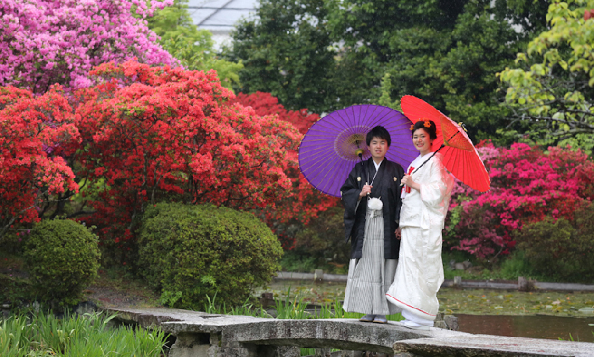
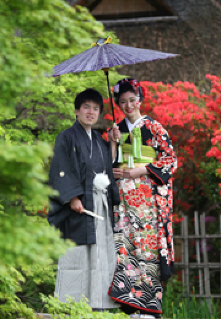
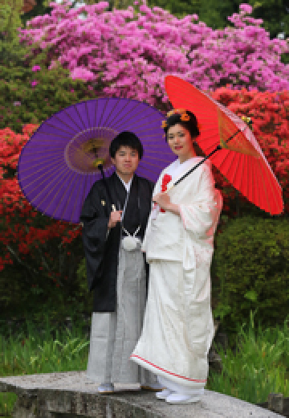
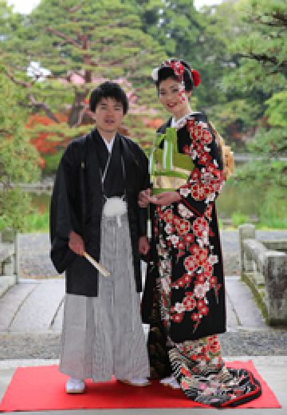
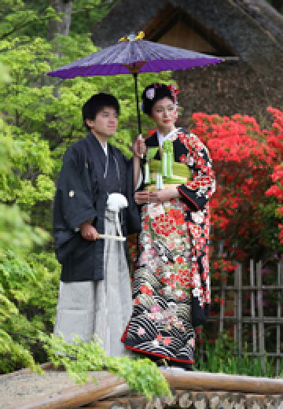
スタッフから
白無垢と引振袖をご使用くださいました。どちらのお衣装もよくお似合いで素敵なお写真ばかりです。ヘアスタイルは新日本髪にされました。
一目惚れの色打掛
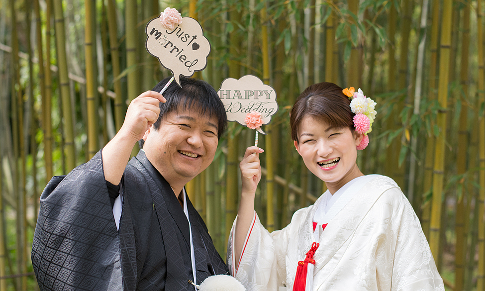
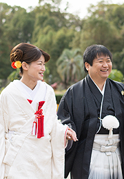
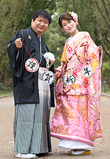
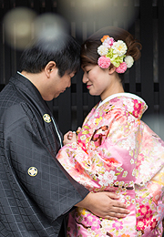
お客様から
とても楽しい時間でした。
念願だった色打掛を着ることができ、白無垢もとてもすてきなお着物で嬉しかったです。
ヘアメイクの先生もとても楽に着付けていただきまして、撮影も苦しくなく、とてもありがたかったです。
いい思い出になり、京都へ出かけて、さらに華結びさんにお願いしてよかったねと主人とも話しております。
お世話になりました。
スタッフから
新郎新婦様共に（特に新郎様？）ピンクの色打掛が気に入っていただけたらしく、この着物を着たいから華結びを選んでくださったとのこと。
当日も「これが着られて嬉しい！」と仰っていただきました。
撮影終了後お着替えになった後も着物のお写真を撮影され、喜んでいただけたのが感じられました。
スタッフから
とっても美しい新婦様でどのお写真を拝見してもうっとりします。また新郎新婦のお二人の笑顔が見ているこちらまで幸せな気持ちにさせてくれます。沢山のお写真、誠にありがとうございました。末永くお幸せにお過ごしください♡